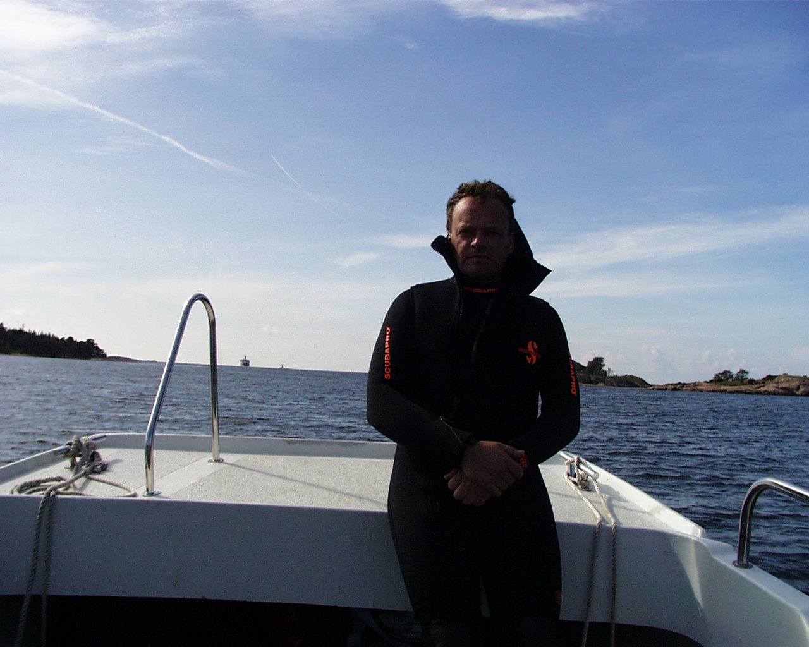
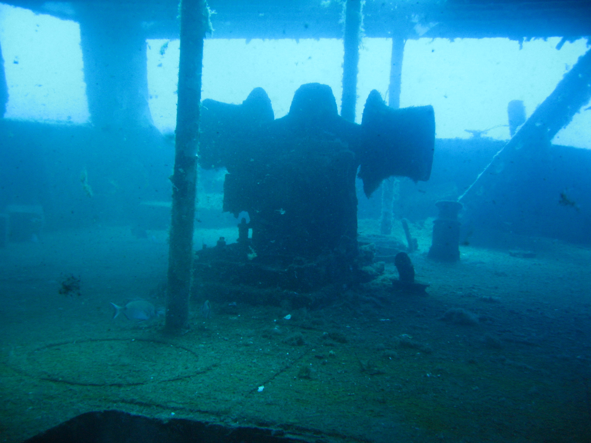
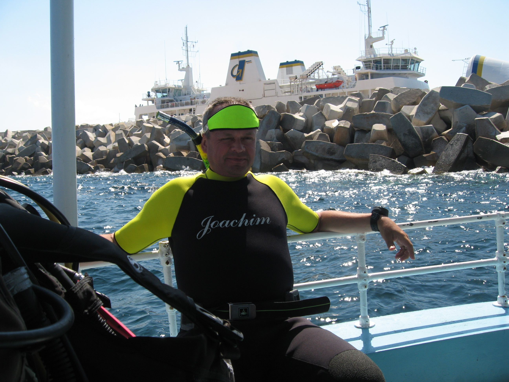
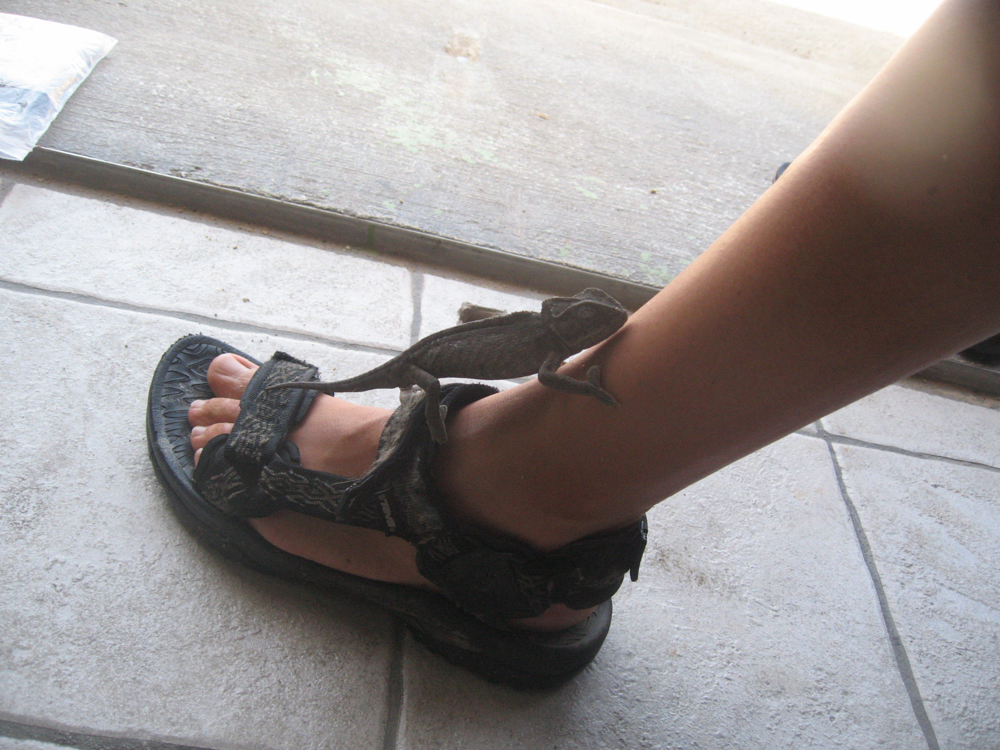
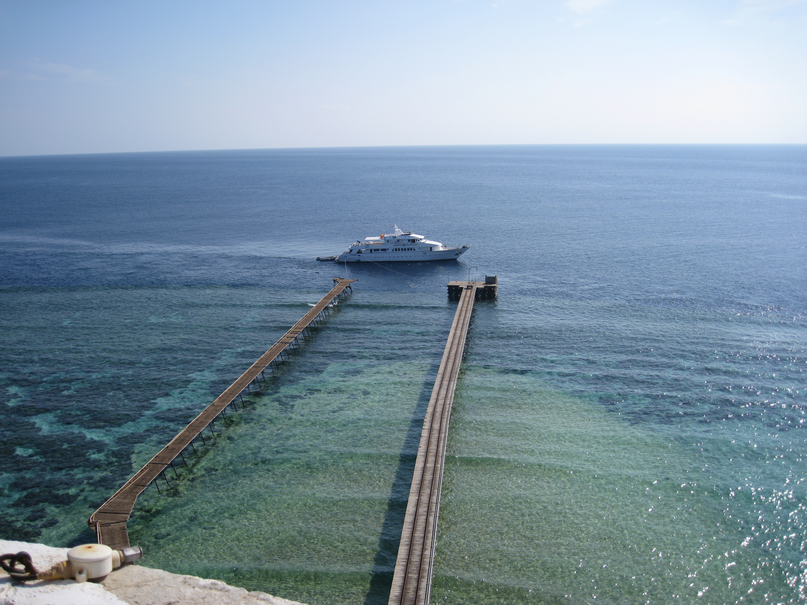
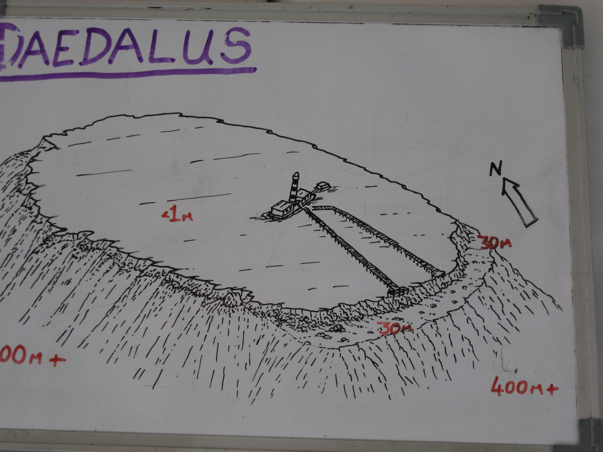
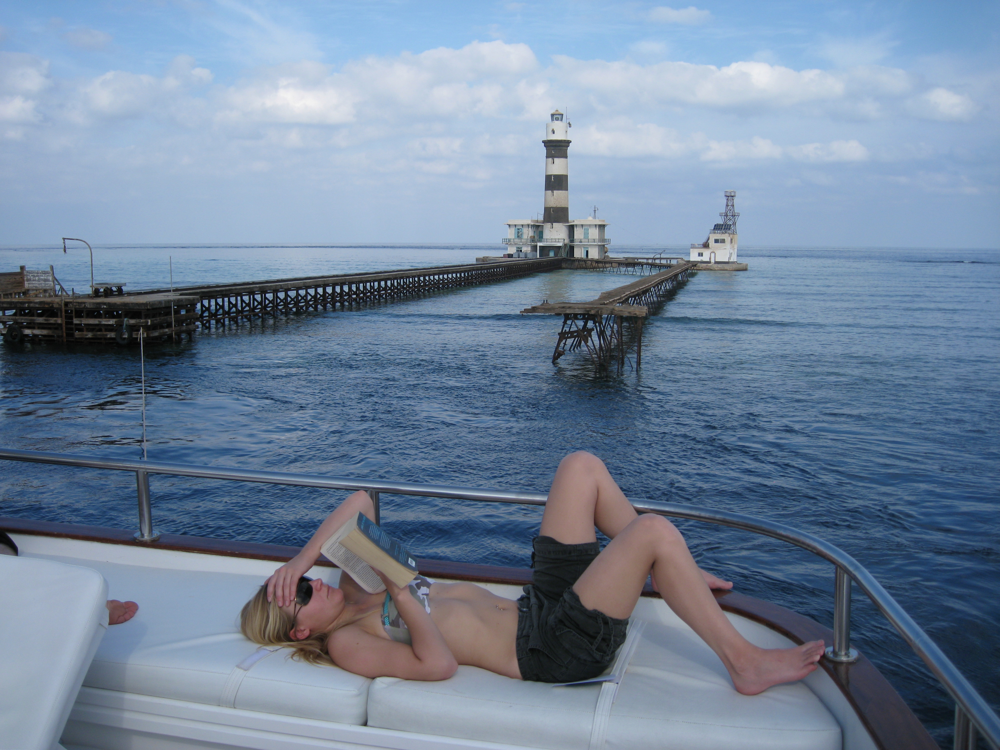

Några andra dykresor, innan Thailand
Åland, 3 september 2000
I 40-årspresent fick jag en dykresa till Åland.
Jag hade ännu inte börjat dyka med torrdräkt, men hade en bra, tjock semidry. Dyk 1 gick ju bra, men när de andra satt torra och varma och åt i båten, och jag var blöt och kall ...
Det blev torrdräkt efter det.
Mariehamn har fin och välordnad vrakdykning. Vi dök på barken Plus, byggd 1885 och förlist 1933.

Gozo, 17 augusti 2007
Mötte upp Anders och Robert på Malta.
Vi dök vrak och naturdyk i blått vatten. Allt välkomnande för dykare.
I stort sett en stenhög, men intressant historia och neolitiska tempelruiner.



Röda havet, söderut, 31 december 2007
Med Emperor. Fyren på Daedalus.
”Vi går upp i fyren”, sa de.
Jocke-amnesi följer med och glömmer att jag är sjukt höjdrädd. Kommer knappt ner genom den lilla luckan och ner till den rostiga stegen igen.



Röda havet, norrut, 23 mars 2008
Med Whirlwind. Thistlegorm med Anders och Robert.
Röda havet, söderut, 9 september 2017
Med Rosetta. Hajkurs med Klas. Dök med Victoria och Jenna. Hammarhaj med mera.